For every family  of non-empty sets there is a
function
of non-empty sets there is a
function  on
on  with
with
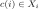
for every .
.
Stated for a family of sets rather than for one set of sets because that is the form every use below takes. It is an axiom and marked so: it is independent of the other axioms of set theory, and a proof that uses it is a proof of a weaker kind than one that does not, which is worth being able to see.
A partially ordered set is inductive if it is non-empty and every chain in it has an upper bound.
Let  be a partially ordered set,
be a partially ordered set,
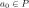
, and let assign to every chain
assign to every chain 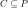
an element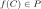
that is a strict upper bound of . Call
. Call 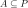
a tower if is a chain, is well ordered by
is a chain, is well ordered by  , and every
, and every  satisfies
satisfies 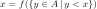
. Then of any two towers, one is an initial segment of the other.
Let  be towers and let
be towers and let  be the union of those initial
segments of that are also initial segments of
be the union of those initial
segments of that are also initial segments of  . Then
is an initial segment of both (a union of initial segments is one), and
it is a tower, being an initial segment of a tower.
. Then
is an initial segment of both (a union of initial segments is one), and
it is a tower, being an initial segment of a tower.
Suppose
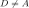
and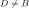
. Since is well ordered and
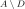
is non-empty it has a least element , and
, and
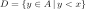
, so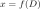
; likewise the least element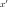
of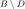
satisfies . Hence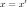
and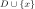
is an initial segment of both
and , strictly larger than – contradicting the definition of
. So 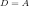
or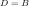
, which is the claim.Every inductive partially ordered set has a maximal element.
Let be inductive and suppose it has no maximal element. For every
chain choose, by the axiom of choice, an element
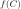
as follows: has an upper bound  , and is not
maximal, so the set of strict upper bounds of is non-empty; let
be a chosen member of it. (For empty this uses that
is non-empty.)
, and is not
maximal, so the set of strict upper bounds of is non-empty; let
be a chosen member of it. (For empty this uses that
is non-empty.)
Let  be the union of all towers, in the sense of the lemma. By the
lemma the towers are totally ordered by "is an initial segment of", so
is a chain, is well ordered – a non-empty subset
be the union of all towers, in the sense of the lemma. By the
lemma the towers are totally ordered by "is an initial segment of", so
is a chain, is well ordered – a non-empty subset  of
meets some tower , and the least element of
of
meets some tower , and the least element of  is least
in , because everything in below a point of already
lies in – and each
is least
in , because everything in below a point of already
lies in – and each  lies in a tower with
lies in a tower with
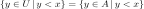
, whence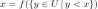
. So is a tower.
But then
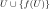
is a tower as well: is a strict upper bound of, so the set is a well-ordered chain, and its
largest element satisfies the required equation by construction. This
tower is not contained in , contradicting the definition of .
Hence has a maximal element.
The converse implication also holds – Zorn's lemma applied to the partial functions choosing from a family, ordered by extension, yields a choice function – so the two are equivalent, and so is the well-ordering theorem. Which of the three is called the axiom is a matter of presentation; that all later uses in this archive go through the maximal element is not.